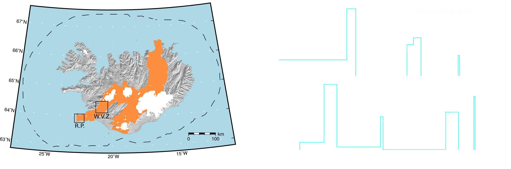
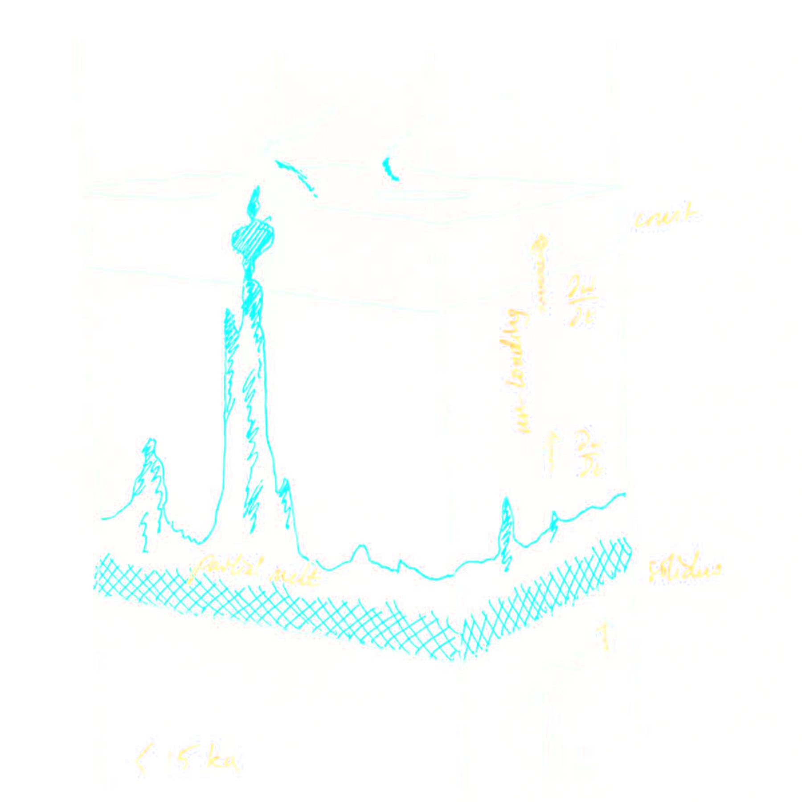
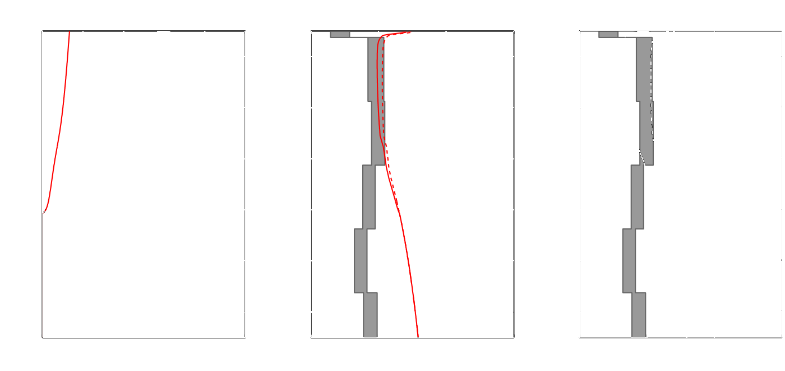
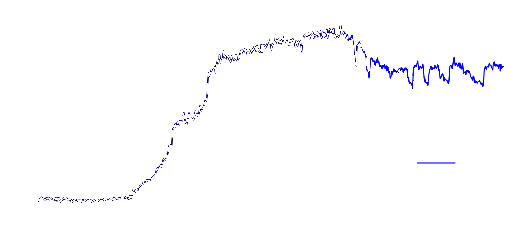
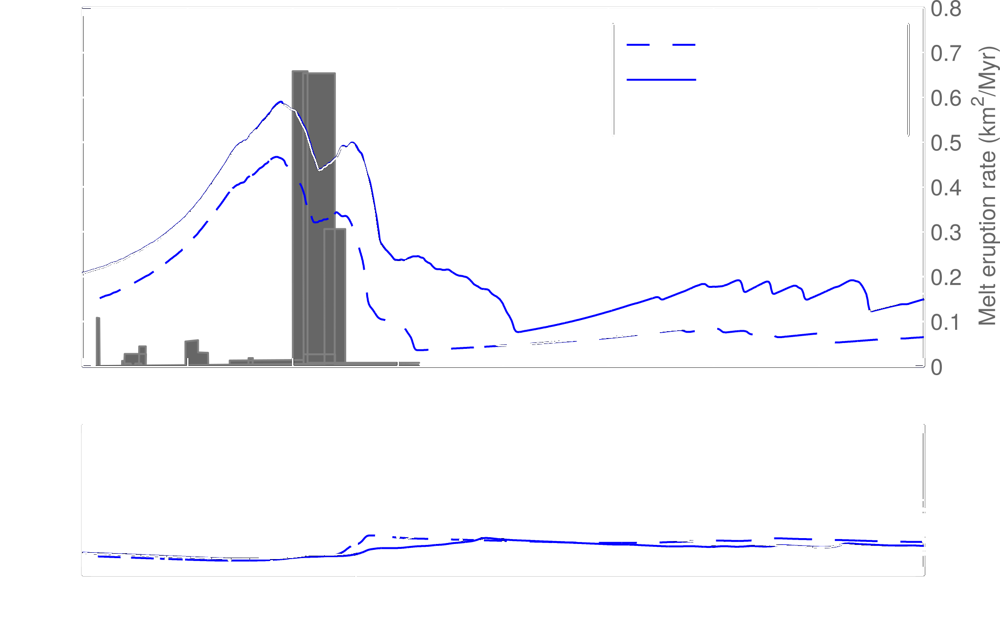

The importance of ice sheet growth and retreat on magmatism and mantle CO2 flux
John Armitage
Kenni Petersen, Dave Ferguson, and Tim CreytsCan deglaciation impact mantle processus?
Iceland
In the latest Pleistocene the Icelandic ice sheet rapidly melted.
The result was an observed increase in volcanism (e.g. Maclennan et al. 2002).
An ice sheet thickness history
The increase in volcansim is also recorded as a reduction in Nb composition (Gee et al., 1998; Eason et al., 2015).
 Correlation coefficient ~ 0.7 [Gaussian smoothing in R]Increase in volcansim recorded as a reduction in Nb composition (Gee et al., 1998; Eason et al., 2015).

Can the loss in surface load really impact melting?
| Ice on top | Ice gone |
|---|---|
|  |  |
Step 1: Solve for melt production and transport
- Calculate the transport of melt through a porous medium.
- We need a relationship between melt porosity and permeability.
- This allows a continuity equation to be written.
Modified Darcy's law to relate average and melt velocity: $$ v_{l} - v = \left(1 - \phi\right)\frac{k}{\phi \eta_{l}} \Delta\rho g $$
Permeability closure equation: $$ k = k_{0}\phi^{3} $$
Conservation of mass (melt): $$ -m + \partial_{t}\phi + v\partial_{z}\phi + \frac{k_{0}\Delta\rho g}{\eta_{l}} \phi^{2}\left(1-\frac{4}{3}\phi\right)\partial_{z}\phi = 0$$
Step 2: Solve for displacement due to deglaciation
- We perturb the mantle upwelling by displacement due to deglaciation.
- We need to calculate how the displacement due to the ice load decreases with depth.
- We need to calculate how the displacement due to the ice load changes with time.
The displacement, $w$, due to the ice load diminishes with depth (England et al., 1983): $$ w = w_{0}exp\left(-\frac{\sqrt{3}\pi}{\lambda}z\right) $$
The surface displacement is from the solution to plate flexure: $$ N \partial_{x}^{4}\left(\partial_{t}w_{0}\right) = \frac{P_{ice}}{\tau_{e}} $$
[$\lambda$ is the glacier wavelength, $N$ is elastic fexural rigidity, $P_{ice}$ is the ice sheet load, $\tau_{e}$ is the viscoelastic decay time]
Prediction of eruption rate, $\phi v_{l}$ when $k_{0} = 10^{-7}$
Prediction of eruption rate, $\phi v_{l}$ when $k_{0} = 10^{-5}$
Compare predicted $\phi$ with inverted $V_{S}$
Force model with a realistic ice sheet history
Force model with a realistic ice sheet history
So deglaciation does most likely impact the deep:
(1) Melt retention is however low to match shallow $V_{S}$ anomaly.
(2) Melt production however must increase to match Nb composition.